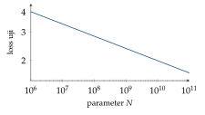

Bab 38
Ke Mana Arah AI
Selama dua tahun kuliah, bidang ini bergerak lebih cepat daripada slide yang mengajarkannya. Ketika kuliah LSTM membahas xLSTM sebagai pesaing transformer, model bahasa besar sudah dipakai jutaan orang setiap hari. Ketika kuliah AI and law membahas usulan aturan untuk model serbaguna, aturan itu sudah berlaku. Bab penutup ini mencoba merangkum perkembangan besar beberapa tahun terakhir dan menghubungkannya kembali dengan fondasi di bab-bab sebelumnya. Isinya pasti cepat usang, dan memang itulah intinya.
Model fondasi dan hukum penskalaan
Istilah foundation model (Bommasani dkk. 2021) menamai pergeseran cara membangun AI. Alih-alih melatih model khusus untuk setiap tugas, kita melatih satu model besar pada data yang luas, biasanya dengan self-supervised learning (Bab 1), lalu menyesuaikannya untuk banyak tugas. GPT-4 (OpenAI dkk. 2023), model-model terbuka seperti LLaMA (Touvron dkk. 2023), CLIP untuk gambar dan teks (Radford dkk. 2021), dan AlphaFold untuk protein adalah contoh-contohnya.
Pendorong utamanya adalah pengamatan empiris yang disebut scaling laws. Kaplan dkk. (2020) menemukan bahwa loss model bahasa turun mengikuti hukum pangkat terhadap jumlah parameter \(N\), jumlah data \(D\), dan komputasi \(C\), misalnya \(L(N)\approx(N_c/N)^{\alpha}\) dengan \(\alpha\) kecil. Hukum pangkat berarti garis lurus pada skala log–log: setiap kali model diperbesar sepuluh kali, loss turun dengan faktor yang kira-kira tetap. Untuk ketergantungan pada jumlah parameter, mereka melaporkan \(\alpha\approx0{,}076\) dan \(N_c\approx8{,}8\times10^{13}\). Dengan angka ini, model berparameter sepuluh juta punya loss sekitar \(3{,}4\), dan model sepuluh miliar parameter sekitar \(2{,}0\) (Gambar 38.1). Eksponen sekecil itu berarti setiap pengurangan loss yang berarti menuntut model yang berlipat-lipat lebih besar.

Sebelum masuk ke model, teks dipotong menjadi token. Kebanyakan model memakai varian byte-pair encoding (Sennrich, Haddow, dan Birch 2015): mulai dari huruf-huruf, lalu berulang kali gabungkan pasangan simbol yang paling sering muncul bersebelahan di korpus. Dari korpus yang berisi kata “main”, “mainan”, dan “bermain”, pasangan seperti “m”+“a” lalu “ma”+“i” lalu “mai”+“n” cepat menjadi satu token “main”, sehingga ketiga kata berbagi potongan yang sama, dan kata yang belum pernah dilihat seperti “permainan” tetap bisa ditulis dari potongan-potongan yang dikenal. Inilah sebabnya model bahasa tidak pernah benar-benar bertemu kata asing, dan juga sebabnya bahasa dengan sedikit data latih, termasuk bahasa Indonesia dibanding bahasa Inggris, sering dipotong menjadi lebih banyak token per kata, sehingga lebih mahal diproses. Komputasi pelatihan transformer bisa diperkirakan dengan aturan praktis \(C\approx6ND\) operasi floating point: sekitar dua operasi per parameter per token untuk lintasan maju, dan sekitar empat untuk lintasan mundur. Hoffmann dkk. (2022) menunjukkan bahwa untuk anggaran komputasi tertentu, banyak model sebelumnya terlalu besar dan dilatih dengan terlalu sedikit data, dan bahwa jumlah token yang optimal kira-kira dua puluh kali jumlah parameter. Model dengan 70 miliar parameter dengan demikian butuh sekitar 1,4 triliun token, dan komputasinya \(6\times7\times10^{10}\times1{,}4\times10^{12} \approx5{,}9\times10^{23}\) operasi. Angka ini menarik dibandingkan dengan ambang \(10^{25}\) operasi yang dipakai AI Act untuk menandai model dengan risiko sistemik (Bab 35): ambang itu kira-kira tujuh belas kali lebih besar.
Supaya model raksasa lebih murah dijalankan, arsitektur mixture of experts (Fedus, Zoph, dan Shazeer 2021) hanya mengaktifkan sebagian kecil subjaringan untuk setiap token, sehingga jumlah parameter total bisa besar sekali sementara komputasi per token tetap terkendali. Untuk menyesuaikan model ke tugas baru tanpa melatih ulang semua parameternya, LoRA (Hu dkk. 2021) membekukan matriks bobot \(\boldsymbol{W}\in\mathbb{R}^{d\times d}\) dan hanya mempelajari koreksi berpangkat rendah \(\boldsymbol B\boldsymbol A\) dengan \(\boldsymbol B\in\mathbb{R}^{d\times r}\) dan \(\boldsymbol A\in\mathbb{R}^{r\times d}\). Untuk \(d=4096\) dan \(r=8\), satu matriks penuh punya sekitar 16,8 juta parameter, sedangkan koreksinya hanya \(2\times4096\times8=65\,536\), kurang dari setengah persen.
Menjalankan model juga punya hitungannya sendiri. Bobot model 70 miliar parameter dalam presisi 16 bit memakan sekitar 140 gigabyte memori. Kuantisasi ke 4 bit menurunkannya menjadi sekitar 35 gigabyte, dengan penurunan kualitas yang biasanya kecil. Selama membangkitkan teks, transformer menyimpan key dan value semua token sebelumnya agar tidak dihitung ulang (Bab 9). Untuk model dengan 80 lapisan dan delapan kepala key–value berdimensi 128, setiap token butuh \(2\times80\times8\times128\) bilangan, yaitu sekitar \(0{,}33\) megabyte dalam presisi 16 bit. Untuk konteks 128 ribu token, itu sekitar 42 gigabyte, lebih dari bobot model yang sudah dikuantisasi. Memori ini, bukan komputasi, sering menjadi batas panjang konteks, dan karena itulah arsitektur rekuren seperti xLSTM dan Mamba, yang ingatannya berukuran tetap, kembali menarik.
Efisiensi dan keterbukaan
Model terbesar mahal untuk dijalankan, sehingga banyak penerapan memakai model yang jauh lebih kecil yang belajar dari model besar. Knowledge distillation (Hinton, Vinyals, dan Dean 2015) melatih model murid untuk meniru distribusi keluaran model guru, bukan hanya label yang benar. Kuncinya adalah suhu \(T\) pada softmax, \(p_i=e^{z_i/T}/\sum_je^{z_j/T}\). Untuk logit guru \((3,1,0)\), suhu satu memberi peluang \((0{,}84;\ 0{,}11;\ 0{,}04)\), hampir sama dengan label one-hot. Suhu tiga memberi \((0{,}53;\ 0{,}27;\ 0{,}20)\), yang memperlihatkan bahwa menurut guru, kelas kedua jauh lebih mirip dengan jawaban yang benar daripada kelas ketiga. Informasi tentang kemiripan antar kelas inilah, yang disebut penulisnya dark knowledge, yang membuat murid belajar lebih banyak dari setiap contoh. Distilasi, kuantisasi, dan pemangkasan bersama-sama membuat model yang dulu butuh pusat data bisa berjalan di laptop atau ponsel.
Model berbobot terbuka juga mengejar model tertutup. DeepSeek-V3 (DeepSeek-AI dkk. 2024) adalah model mixture of experts dengan 671 miliar parameter total, tetapi hanya 37 miliar yang aktif untuk setiap token. Laporan teknisnya menyebut seluruh pelatihannya membutuhkan sekitar 2,8 juta jam GPU, angka yang oleh penulisnya ditonjolkan sebagai hemat untuk model sebesar itu, dan kinerjanya dilaporkan sebanding dengan model tertutup terkemuka. Bobot model seperti ini bisa diunduh, diperiksa, dan disetel siapa saja, dengan segala manfaat dan risiko yang dibahas di Bab 36.
Mengukur yang sulit diukur
Benchmark adalah cara bidang ini mengukur kemajuan, dan benchmark cepat jenuh. Model mutakhir sudah melampaui 90 persen pada MMLU, kumpulan soal pilihan ganda dari puluhan bidang yang beberapa tahun lalu dianggap sulit. Humanity’s Last Exam (Phan dkk. 2025) dirancang sebagai jawabannya: 2500 soal dari puluhan bidang, ditulis para ahli di seluruh dunia, dengan jawaban yang tidak ambigu, mudah diperiksa otomatis, dan tidak bisa ditemukan dengan pencarian internet biasa. Saat diterbitkan, model-model terbaik masih mencapai akurasi rendah, dan juga buruk dalam menilai seberapa yakin mereka seharusnya.
Benchmark yang lebih dekat ke pekerjaan nyata juga muncul. SWE-bench (Jimenez dkk. 2023) berisi 2294 masalah dari isu GitHub sungguhan di dua belas repositori Python populer. Model diberi seluruh kode dan deskripsi masalahnya, lalu harus mengubah kode itu sehingga uji yang terkait lolos, tugas yang menuntut membaca konteks panjang, mengubah beberapa berkas sekaligus, dan berinteraksi dengan lingkungan eksekusi, persis pekerjaan agen pemrograman di bawah.
Semua benchmark publik menghadapi masalah yang sama dengan pembagian data di Bab 1: kebocoran. Kalau soal-soal benchmark ikut masuk ke data pelatihan yang diambil dari internet, skor tinggi tidak lagi mengukur kemampuan, melainkan ingatan. Kumpulan soal tersembunyi, soal yang terus diperbarui, dan evaluasi pada tugas yang dibuat setelah tanggal batas data pelatihan adalah upaya-upaya untuk menjaga agar angka tetap jujur.
Menyelaraskan model dengan manusia
Model bahasa yang hanya dilatih menebak kata berikutnya belum tentu membantu, jujur, atau aman. InstructGPT (Ouyang dkk. 2022) memperkenalkan resep tiga langkah: penyetelan dengan contoh jawaban yang ditulis manusia, pelatihan model ganjaran dari perbandingan pasangan jawaban (Christiano dkk. 2017), lalu optimasi model bahasa terhadap model ganjaran itu dengan PPO (Bab 16), sambil menjaga agar ia tidak terlalu jauh dari model awal.
Direct preference optimization (Rafailov dkk. 2023) memperlihatkan bahwa langkah reinforcement learning bisa dilewati. Penurunannya elegan. Tujuan RLHF adalah memaksimalkan ganjaran harapan dikurangi penalti KL terhadap model acuan \(\pi_{\mathrm{ref}}\): \[\max_\pi\ \mathbb{E}_{y\sim\pi(\cdot\mid x)}\big[r(x,y)\big]-\beta\,\mathrm{KL}\big(\pi(\cdot\mid x)\,\|\,\pi_{\mathrm{ref}}(\cdot\mid x)\big).\] Masalah ini punya solusi tertutup, \(\pi^*(y\mid x)\propto\pi_{\mathrm{ref}}(y\mid x)\exp\big(r(x,y)/\beta\big)\). Membalik persamaan ini memberi ganjaran dalam bentuk policy, \(r(x,y)=\beta\log\big(\pi^*(y\mid x)/\pi_{\mathrm{ref}}(y\mid x)\big)\) ditambah suku yang hanya bergantung pada \(x\). Dalam model preferensi Bradley–Terry, peluang jawaban \(y_w\) lebih disukai dari \(y_l\) adalah \(\sigma\big(r(x,y_w)-r(x,y_l)\big)\), dan suku yang hanya bergantung pada \(x\) saling menghapus dalam selisih itu. Hasilnya, preferensi bisa dipelajari langsung pada policy dengan loss \[\mathcal{L}_{\mathrm{DPO}}=-\log\sigma\Big(\beta\log\frac{\pi_\theta(y_w\mid x)}{\pi_{\mathrm{ref}}(y_w\mid x)}-\beta\log\frac{\pi_\theta(y_l\mid x)}{\pi_{\mathrm{ref}}(y_l\mid x)}\Big),\] sebuah binary cross-entropy biasa, tanpa model ganjaran terpisah dan tanpa sampling selama pelatihan. Sebagai gambaran skalanya, kalau selisih ganjaran implisit kedua jawaban adalah satu, model Bradley–Terry memberi peluang \(\sigma(1)\approx0{,}73\) bahwa jawaban yang lebih baik memang dipilih, dan loss-nya \(-\ln0{,}73\approx0{,}31\). Pelatihan mendorong selisih itu membesar, tetapi faktor \(\beta\) dan rasio terhadap model acuan menjaga agar model tidak menjauh terlalu banyak dari bahasa yang wajar.
Model yang bernalar
Wei dkk. (2022) menunjukkan bahwa meminta model menuliskan langkah-langkah penalarannya sebelum menjawab, chain-of-thought, memperbaiki kinerja pada soal matematika dan logika secara nyata. Generasi berikutnya melatih kemampuan ini secara langsung. DeepSeek-R1 (DeepSeek-AI dkk. 2025) memperlihatkan bahwa reinforcement learning dengan ganjaran yang bisa diperiksa secara otomatis, misalnya apakah jawaban akhir sebuah soal matematika benar atau apakah sebuah program lolos uji, membuat model belajar menulis rantai penalaran panjang, memeriksa ulang, dan mencoba jalan lain ketika buntu. Algoritme yang dipakai, GRPO (Shao dkk. 2024), adalah varian PPO tanpa critic. Untuk setiap soal, model menghasilkan sekelompok jawaban, dan keunggulan setiap jawaban diukur relatif terhadap teman sekelompoknya, \(A_i=(r_i-\bar r)/\mathrm{std}(r)\). Kalau dari empat jawaban dua benar (ganjaran satu) dan dua salah (nol), rata-ratanya \(0{,}5\), simpangan bakunya \(0{,}5\), dan keunggulannya \(+1\) untuk yang benar dan \(-1\) untuk yang salah. Rata-rata kelompok menggantikan fungsi nilai sebagai baseline, gagasan yang sama dengan baseline pada REINFORCE di Bab 16, dan model nilai yang besar tidak perlu dilatih sama sekali. Pola ini mengingatkan pada pelajaran dari AlphaZero di Bab 5: memberi model lebih banyak waktu untuk “berpikir” saat menjawab, dengan mencari dan memeriksa, menjadi sumbu penskalaan baru di samping ukuran model.
Hasilnya terlihat jelas dalam matematika. AlphaGeometry (Trinh dkk. 2024) menggabungkan model bahasa dengan mesin deduksi simbolik untuk menyelesaikan soal geometri olimpiade. Pada Olimpiade Matematika Internasional Juli 2025, sebuah versi Gemini Deep Think dari Google DeepMind menyelesaikan lima dari enam soal dalam bahasa alami dan diakui panitia mencapai standar medali emas1.
Agen
Model bahasa yang bisa memakai alat berubah dari penjawab pertanyaan menjadi agen. ReAct (Yao dkk. 2022) merangkai penalaran dan tindakan secara bergantian: model menulis pikiran, memanggil alat seperti pencarian web atau kalkulator, membaca hasilnya, lalu berpikir lagi. Retrieval-augmented generation (Lewis dkk. 2020) memberi model akses ke basis dokumen sehingga jawabannya bisa bersandar pada sumber yang dikutip, bukan hanya pada ingatan parameternya. Agen pemrograman yang bisa membaca kode, menjalankan uji, dan memperbaiki kesalahannya sendiri menjadi salah satu penerapan yang paling cepat berkembang. Sebagian besar masalah lama muncul kembali dalam bentuk baru: credit assignment untuk tugas panjang (Bab 16), galat yang menumpuk sepanjang banyak langkah seperti pada rollout simulator (Bab 30), dan pertanyaan siapa yang bertanggung jawab ketika agen bertindak (Bab 35).
Agen juga mulai keluar dari layar. Model vision-language-action seperti RT-2 (Brohan dkk. 2023) melatih model penglihatan dan bahasa yang sudah dilatih pada data web untuk mengeluarkan aksi robot sebagai token, sehingga robot bisa menerima perintah seperti “ambil benda yang bisa dipakai sebagai palu” dan memanfaatkan pengetahuan umum yang tidak pernah ada di data robotnya. Di sini juga, lapisan-lapisan klasik dari Bab 21, seperti kendali tingkat rendah dan pengaman, tetap bekerja di bawah model besar itu.
Gambar, video, dan model dunia
Model difusi dari Bab 15 menjadi mesin di balik generator gambar modern. Latent diffusion (Rombach dkk. 2021) menjalankan difusi di ruang laten sebuah autoencoder, bukan di ruang piksel, sehingga jauh lebih murah. Diffusion transformer (Peebles dan Xie 2022) mengganti U-Net dengan transformer dan memperlihatkan bahwa model difusi juga mengikuti hukum penskalaan. Generator video adalah perpanjangan alami dari gagasan yang sama ke dimensi waktu.
Model yang membangkitkan video yang konsisten secara fisis mulai disebut world models, sebuah istilah yang dipakai Ha dan Schmidhuber (2018) untuk agen yang belajar model internal lingkungannya lalu berlatih di dalam “mimpi”-nya sendiri. Apakah model video benar-benar memahami fisika atau hanya meniru penampilannya adalah pertanyaan terbuka, dan alat dari Bagian V, seperti uji kekekalan dan ekstrapolasi, adalah cara yang baik untuk mengujinya.
AI untuk sains
Tahun 2024 memberi penanda simbolis. Hadiah Nobel Fisika diberikan kepada John Hopfield dan Geoffrey Hinton untuk penemuan dasar yang memungkinkan machine learning dengan jaringan saraf tiruan, dan setengah Hadiah Nobel Kimia diberikan kepada Demis Hassabis dan John Jumper untuk prediksi struktur protein (Bab 24). Jaringan Hopfield yang dihargai itu adalah leluhur langsung jaringan Hopfield modern di Bab 9.
Di bidang cuaca, model berbasis machine learning seperti GraphCast (Lam dkk. 2023), GenCast (Price dkk. 2025), dan Aurora (Bodnar dkk. 2024) kini bersaing dengan sistem numerik operasional, dan beberapa pusat prakiraan cuaca mulai menjalankannya berdampingan. Model fondasi untuk fisika umum (McCabe dkk. 2023; Alkin dkk. 2024) dan kumpulan data simulasi besar (Ohana dkk. 2024) mencoba mengulang kesuksesan itu untuk PDE secara umum. Di kimia dan biologi, AlphaFold3 (Abramson dkk. 2024) memperluas prediksi struktur ke interaksi antar molekul. Pola yang sama muncul di semua bidang ini: data simulasi dan pengukuran yang terkumpul selama puluhan tahun menjadi bahan bakar, dan struktur fisika, seperti simetri dan kekekalan, menjadi kemudi.
Yang tidak berubah
Di tengah semua perubahan ini, pelajaran dari kuliah-kuliah dasar tetap berlaku, bahkan semakin penting. Generalisasi di luar data latih tetap sulit (Bab 1). Model besar tetap bisa belajar jalan pintas yang salah, dan evaluasi yang jujur tetap memerlukan pembagian data yang hati-hati. Optimasi tetap bergantung pada condition number dan noise (Bab 4). Model generatif tetap bisa berhalusinasi, sehingga penalaran yang bisa diperiksa dan sumber yang bisa dikutip menjadi semakin berharga. Dan sistem yang kuat tetap harus dijelaskan dengan jujur kepada orang-orang yang hidupnya terdampak (Bab 17 dan Bab 35).
Kalau ada satu benang merah yang saya bawa dari empat semester ini, mungkin begini: kemajuan terbesar jarang datang dari membuang apa yang sudah diketahui. LSTM bertahan karena constant error carousel adalah gagasan yang benar. Konvolusi bertahan karena simetri geser adalah sifat dunia. Persamaan Navier–Stokes tidak berhenti berlaku karena ada jaringan saraf. Model terbaik adalah yang belajar dari data sambil menghormati apa yang sudah kita ketahui tentang dunia.
Catatan sumber.
Bab ini disusun dari bacaan, bukan dari satu mata kuliah. Sebagian topiknya disinggung di kuliah LSTM (xLSTM dan Mamba), NLP (model bahasa besar), AI and Law (model AI serbaguna), dan AI in Life Sciences (model bahasa untuk kimia). Perkembangan yang baru diperiksa dengan pengumuman resminya pada saat penulisan, Oktober 2026.
Pustaka bab ini
Pengumuman Google DeepMind, Juli 2025: https://deepmind.google/blog/advanced-version-of-gemini-with-deep-think-officially-achieves-gold-medal-standard-at-the-international-mathematical-olympiad/. OpenAI melaporkan hasil setara dengan model eksperimentalnya, tetapi hasil itu tidak disertifikasi oleh koordinator IMO.↩︎